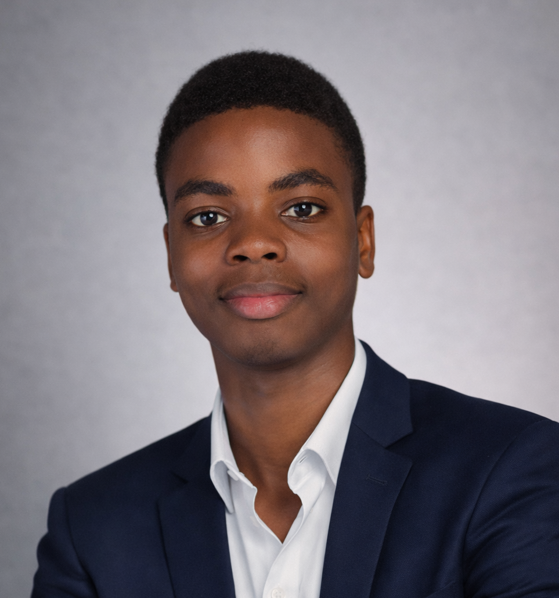

Je suis développeur web, infographe certifié et designer UX/UI, fondateur de Tsk's Tech Services — un studio tech africain que j'ai bâti de mes mains depuis Cotonou, Bénin. Mon objectif ? Créer des expériences numériques pensées pour les humains, alliant logique, esthétique et accessibilité pour un impact réel sur le terrain.

Je ne me contente pas d'un seul domaine. Je programme, je conçois et je crée — trois piliers que je maîtrise ensemble pour livrer des produits numériques complets, cohérents et percutants.
Le langage est un outil de connexion. Je l'utilise pour créer des ponts entre cultures, équipes et clients.
Chaque expérience m'a forgé. Je n'ai pas attendu les opportunités — je les ai créées.
Chaque projet que je livre est une réponse à un vrai problème. Je ne code pas pour le code — je construis pour transformer.
Je ne livre pas juste du code ou des visuels — je m'implique du début à la fin, avec un processus rigoureux qui garantit des résultats à la hauteur des attentes.
J'analyse les besoins en profondeur : contexte, audience cible, objectifs business et contraintes. Je ne commence rien avant de comprendre tout.
Architecture de l'information, wireframes, moodboards. Je pose les fondations visuelles et techniques avant d'écrire une seule ligne de code.
Développement itératif, design haute fidélité, tests continus. Je livre par étapes, en m'adaptant aux retours en temps réel.
Déploiement, documentation claire, transfert de compétences si besoin. Mon travail ne s'arrête pas au dernier commit — il s'arrête quand vous êtes satisfait.
L'apprentissage est pour moi un mode de vie. Chaque formation a ajouté une couche à ma polyvalence — du diplôme d'infographie aux sciences exactes.
Vous avez une idée, un projet, une vision ? Je suis exactement la personne qu'il vous faut. Écrivez-moi — je réponds vite.